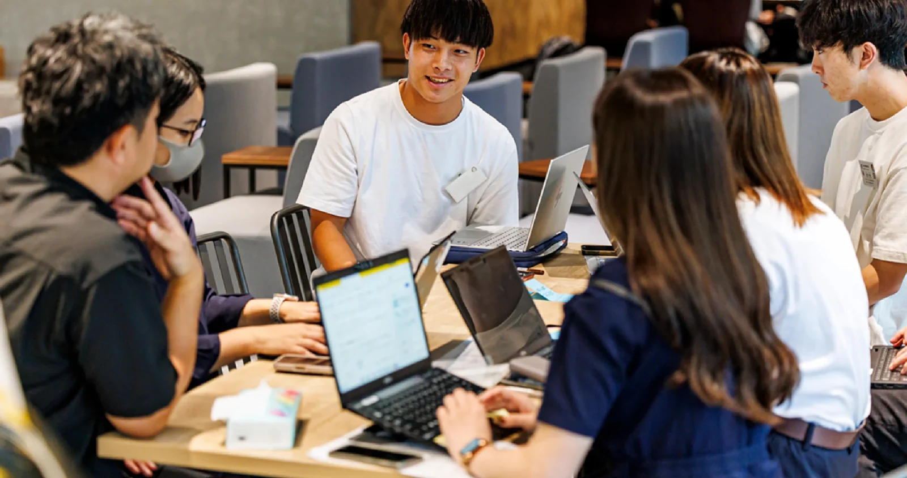
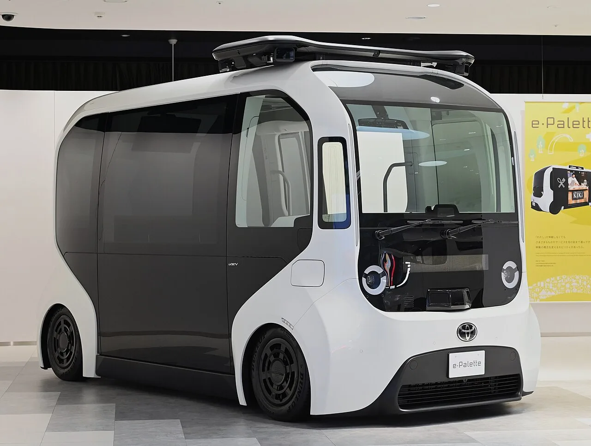
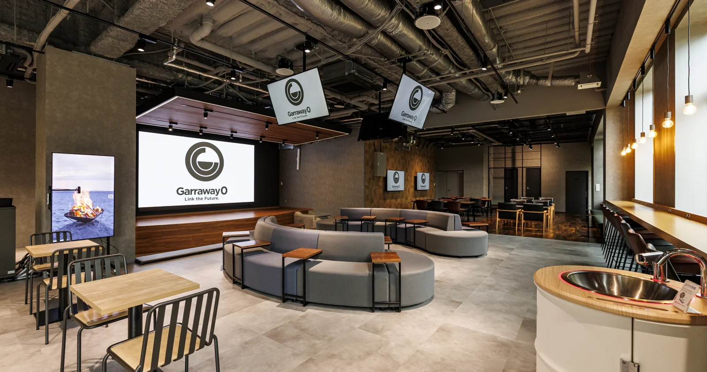

モビリティサービス企画
課題の整理から、対象者・使い方・運営方法を具体化します。
自治体向け参加案内 2026年度 国土交通省採択事業
買物・通院・観光の移動、担い手不足、地域のにぎわい。自治体だけでは進めにくい課題を、地域の仲間と専門家と一緒に考え、つくり、実施計画にまとめます。

参加すると、仕事がどう前に進むか
企画・開発・データ分析から実証準備、車両管理・整備保守まで、まとめて相談・依頼できます。
課題の整理から、対象者・使い方・運営方法を具体化します。
地域での使い方を考え、実証内容と実施候補地の検討を進めます。
ルート・安全性・担い手を調べ、来年度の実証に向けた条件を整理します。
必要な機能を整理し、既存の仕組みや試作を活用して形にします。
現地調査と試作品のデータを分析し、サービス案を改善します。
継続して運営するための車両管理・整備保守の体制も相談できます。
地域別の実施・実証計画へ
アプリの試作・分析は、地域の課題と必要性に合わせて実施。すべての参加自治体に同じアプリや実証を提供するものではありません。
技術を、地域で役立つサービスへ
構想段階から参加すると、地域の課題や希望を企画に反映しやすくなります。

観光、生活の移動、移動店舗、物流、停車中の活用。地域の利用者と使う場面から、必要なサービスを企画します。
走らせることを目的にせず、地域の課題から考えます。ルート・運行方法・安全性・担い手・継続性を確認し、実証に必要な条件を計画にまとめます。
車両の提供、実証地域への選定、補助金採択、事業化を保証するものではありません。
2026年11月〜2027年2月
完成した企画書は不要。相談から計画まで、一緒に進めます。
フォームに、分かる範囲で記入。
30分〜1時間
課題と次の一歩を相談。
現場の声を聞き、サービスを考える。
試作やデータを使い、案を確かめる。
条件・役割・費用を整理。
参加回数・時間は個別に相談します。全活動への出席を求めるものではありません。

日高 洋祐 氏MaaS Tech Japan 代表取締役CEO
参加の入口に、特別講演を。
2026年11月11日 ／ Garraway0
日高洋祐氏の講演を入口に、プログラムとコンソーシアムの趣旨を知り、地域で取り組みたいことを相談できます。
11/11の講演を見る ↗講演テーマ・進行は調整中。講演に参加できない方も、プログラムへ申し込めます。

参加前に確認したいこと
本プログラム内
地域の課題に応じ、取り組む内容・範囲を相談します。
個別の実施・継続運用
実際の運行、車両、保険、継続的な運用・車両管理・整備保守などは、無料支援と分けて協議します。
企業向けコンソーシアム年会費は別制度です。自治体向け人材育成プログラムの参加費ではありません。
自治体・企業・大学・地域の人たちが協力する「大分未来モビリティ・コンソーシアム」の立ち上げと、人材育成を並行して進めます。プログラム参加にコンソーシアム参画は必須ではありません。同コンソーシアムで実証を行う際は、参画が必要です。
将来的には、トヨタの陸・海・空のモビリティに関わる取組みとの連携も目指します。
まずは、課題とやりたいことから。
企画が固まっていなくても参加できます。
相談窓口：トヨタカローラ大分 幸野氏
申込先は講演会・プログラムの共通フォームです。
「11月11日 特別講演・トークセッションへの参加予定」で、講演の参加希望を別に回答してください。講演に参加しない場合は「参加しない（プログラム参加登録のみ）」を選べます。
入力内容は事務局との連絡・相談・調整に使用します。
事業主体：トヨタカローラ大分株式会社
企画・運営・伴走支援：株式会社モビリティデザインラボ
講師・プログラムプロデュース：植野直亮。講演は2回程度を想定し、宮代陽之氏は登壇候補・日程調整中です。講師・プログラム全体を見る ↗
日高氏写真：MaaS Tech Japan公式プロフィール（既存掲載素材）。更新：2026年10月27日。